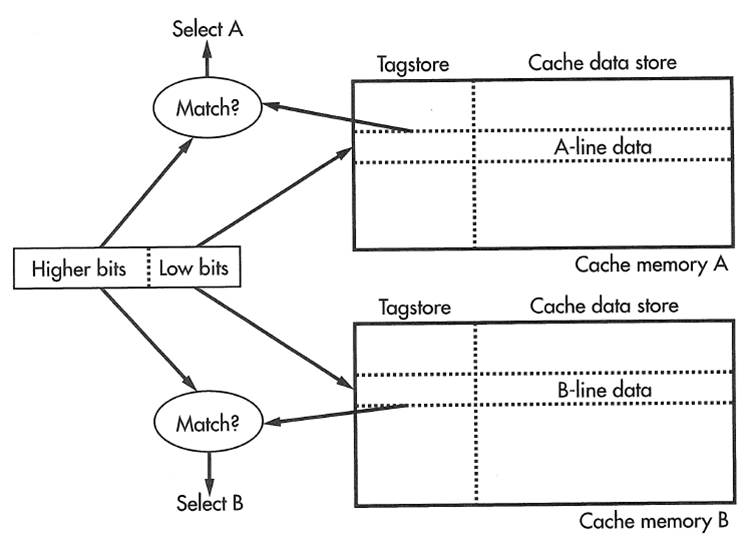

Understanding Processor Microarchitecture
Joint seminar by Almaty Management University and Imagination Technologies August 25 2016Quiz
Name ___________________________________________________________________
1. What is the formula for program execution time? a) Execution Time = (#instructions)/((cycles/instruction)(seconds/cycle)) b) Execution Time = (#instructions)(cycles/instruction)(seconds/cycle) c) Execution Time = (#instructions)(instruction/cycles)(seconds/cycle) d) Execution Time = (#instructions)(cycles/instruction)(cycle/seconds) e) Execution Time = (#instructions)/(cycles/instruction)(seconds/cycle) 2. What is the major limitation for superscalar microarchitectures (with multiple pipelines)? a) Lack of parallelism in multiple instruction processing b) Frequent pipeline flushes during jumps c) Instruction dependencies d) For special applications, like graphics, requires special programming e) Memory sharing between processors 3. What kind of cache is shown on the picture? a) Fully associative cache b) Direct cache c) Two-way cache  Quiz is created by Yuri Panchul Sources of pictures: See MIPS Run Linux (2nd Edition, 2006) by Dominic Sweetman http://imgtec.com